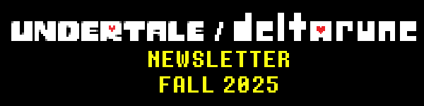
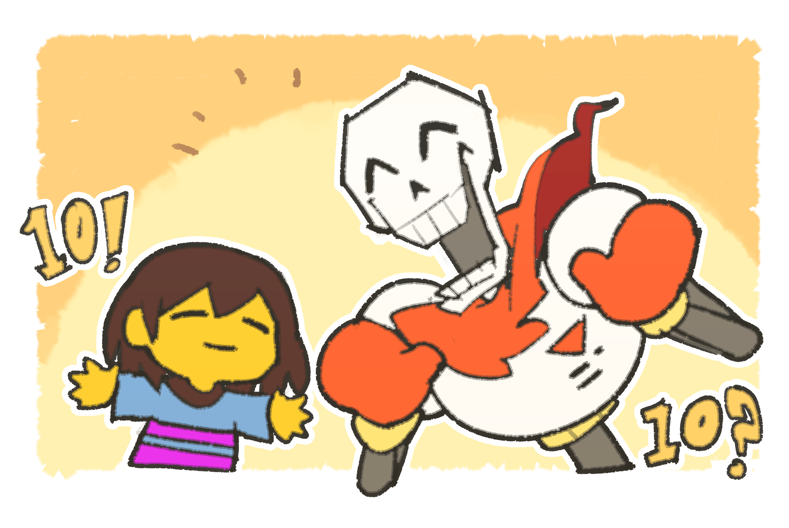
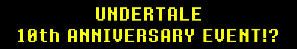
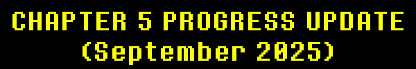
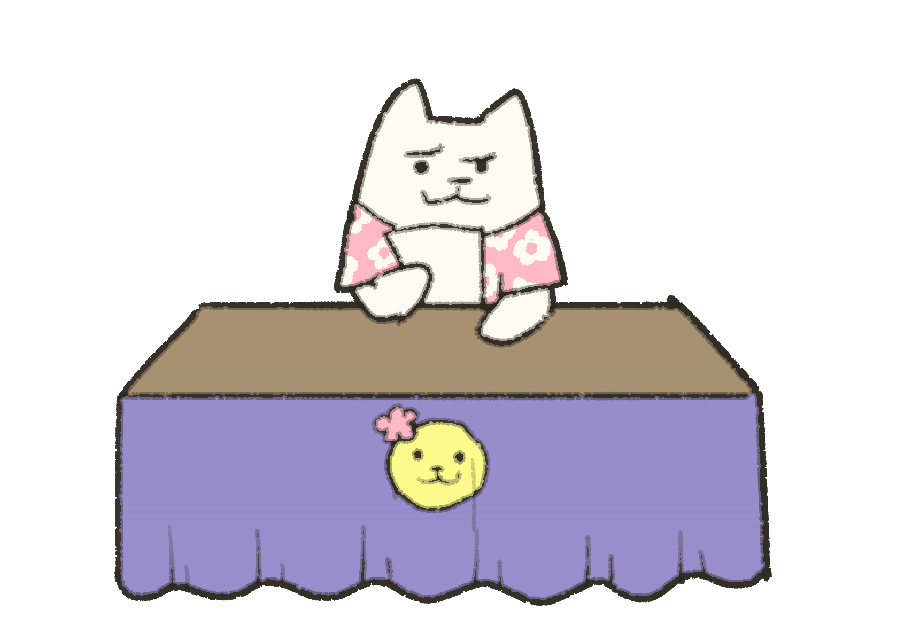
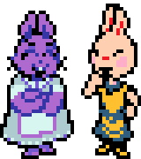
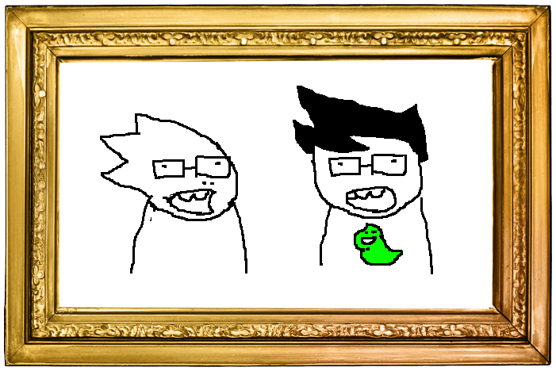
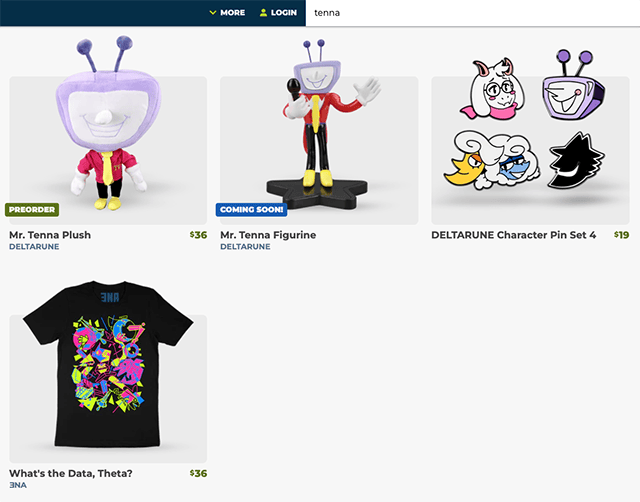

It's been 10 years since UNDERTALE released...
Therefore...

That's right!!!
Let's have a stream where we play through UNDERTALE, just like we played through DELTARUNE Chapter 1!
(Looks at the calendar and realizes that the anniversary is on a weekday...)
Umm...
Why don't we do this on the weekend after the anniversary, instead?
The event will be run across two days at 4PM PT on September 20 and 21.
And you can watch it here.
That's right, when we tried playing through everything, it took over 8 hours...
So, we had to split it up. We'll have to play half of the game one day, and half of the game the next day.
That sure is a long time to talk... is anyone going to enjoy watching this?
That's right, last time, DELTARUNE Chapter 3 & 4 came out.
I really want to look back on these Chapters and discuss my thoughts!


But...
I don't have time to do that right now...
The anniversary is coming up.
There is no time to discuss this now...


Instead, let's talk about Chapter 5!
Some of you might be wondering what kind of Chapter it is...
Well, right now, there is no reason to tell you that...
Both of us like surprises, right?
If I think of everything in the Chapter, there is very little I would like to share...
That being said, as an act of goodwill, I would like to spoil one optional Castle Town scene. This scene assumes you have seen the Special Room in Chapter 4...

Next time, I can show more from Castle Town.

This is the current status of progress as of September 8th, 2025.
AREAS
- The early parts of Chapter 5 are complete, but need polish in optional areas.
- Maybe the last 40%-or-so of the game is in a "rough first pass" state, and the last 10% is in a "prototyping" state.
- Probably around 85% of cutscenes have been created up to a first draft state, however, of those at least 20% or so will require more polish.

ENEMIES
- Regular enemies are mostly done. One programmer is already working on the regular enemy bullet patterns of Chapter 6.
- The direction of the boss battles have been decided and many boss attacks have already been completed.
- Once the attacks are finished, the next goal will be to arrange the attacks and make adjustments to them if necessary to fit the atmosphere of the battle.
OVERALL
With Chapter 3&4, there were some creative "hurdles" which made developing parts of the game difficult. How to do the Boards of Chapter 3, how to design the events in Noelle's house, etc.
Once we got past those hurdles and expanded the team, everything went much more smoothly.
Chapter 5 was not without hurdles! But... we already passed all of the obvious ones, so there's little to get in our way now! We just need to keep making the game.

TIMELINE
The rough timeline will look like this.
MAKING GAME (we are here)
v
LOCALIZATION / MAKING GAME / PORTING GAME
v
FINISH
v
TESTING & BUG FIXING
v
RELEASE
Currently, we have one main deadline: I want to begin the translation by the end of 2025. After that point, gameplay changes will be acceptable, but large-scale text and story changes will be heavily frowned upon.
Factoring the localization and testing... I don't think that the game will be released in the first half of 2026.
... That's not a surprise, right? From last time's updates, you guys have access to exactly how long each step of the development took.
Anyway, we don't have any external factors surrounding the release date this time. We'll release it when it's done, and we will continue to update you guys on the progress of its completion. Thanks!

Let me tell you about Homestuck.
If you haven't heard of Homestuck, it was the webcomic that basically launched my career. Back in 2010, I was a high school student with no aspirations for music composing at all - that was, until I discovered this webcomic which I really liked. You see, the comic's animated sequences had music created by a team of very talented musicians - the Homestuck Music Team. I wanted nothing more than to be part of my beloved comic just like them. So one day, when a call was put up for additional musicians, I instantly took this opportunity to "become a composer". I made some bad music, sent it over, and... the author of the comic added me to the group!
Well, I didn't want to waste the opportunity of being added, so I tried really hard to make as much music as I could, combining as many motifs as I could from the other musicians. It was that experience which forged me into the the composer I am today.
Additionally, thanks to my association with the comic, I gained a following on social media, which really helped me when I made a Kickstarter for my game UNDERTALE. (You know, the thing which enabled me to make the game). I even initially reached out to Temmie specifically because of a Homestuck fanart she did on Tumblr.
So... I really owe a lot to Homestuck! It made me better at music, allowed me to make my game, connected me with many important friendships, and it taught me lessons on how to deal with fandom and the importance of valuing your fans. In my mind it's basically a debt I might never be able to repay.
Therefore, when I was asked if I could help out with a new Homestuck animation, I said I would give it a shot! ... Surprisingly, the request was not for music, but voice acting... still, I felt like I should help out.
Waiting at the voice acting studio was another surprise... a few minutes into recording with the voice director, I noticed... "Hey... isn't this guy's resting voice... Daggett from Angry Beavers???" It turned out the voice director was the voice of Invader Zim, Richard David Horvitz! The recording session took a few hours, but it was so fun that it felt like it ended pretty much immediately. I'm not really a pro, so I was nervous about the result, but Invader Zim told me that I did a good job... so I just have to trust him.
Anyway, that was my experience helping out!
Now, I'd like to show you the trailer! I play the role of John Egbert, the kid wearing glasses. But first, a warning for the more sensitive members of my audience...
Homestuck has a lot of dirty language, and they had me say some pretty profane things, so if you're a kid, or would rather not hear those kinds of words, don't watch!
Thanks.


Fangamer developed an alternate version of OFF available for Nintendo Switch and Steam. It's a legendary RPG maker game. The characters were inspirations for the designs of Sans and Papyrus.
ACC, the musician for the original version (available online for free forever) didn't want his music to be used in the remake, but also didn't have a problem with us making new tracks. It's a bit of a strange circumstance, but I was asked by OFF creator Mortis Ghost to help, so I made some tracks for the game.
You can download all of my songs for free here.
They are also available on YouTube.
Enjoy!
Recently there have been some musical albums consisting of UNDERTALE and DELTARUNE covers which I have been encouraged to recommend to you.

DELTARUNE Piano Collections Volume 1 - Out now!
Some virtuosic piano arrangements of DELTARUNE's music by Trevor Alan Gomes. I really really recommend giving this one a listen. It's available on Youtube if you want to sample it for free.
Monstercat x Undertale - Upcoming on October 6
An album of electronic UNDERTALE arrangements curated by Monstercat & Firaga Records. Many different artists worked very hard to put this album together, and the creativity shines through. The full album releases Monday, October 6 with a physical edition to follow. Click here to be the first to listen to it.
When I searched "Tenna" on the Fangamer store, a shirt for "ENA" came up.

It doesn't look like my usual merchandise, but I guess I should tell you guys to buy it...

10 years passing is annoying
… Does that mean I'm annoying?
... Anyway, I'll save my words for the event.